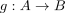
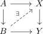

inner anodyne map
1. Definition
Let  be simplicial sets and
be simplicial sets and

a natural transformation Then is said to be a inner anodyne map, if it satisfies the left lifting property with respect to inner fibrations
is said to be a inner anodyne map, if it satisfies the left lifting property with respect to inner fibrations 

Let
see:
Let be simplicial sets and

a natural transformation Then is said to be a inner anodyne map, if it satisfies the left lifting property with respect to inner fibrations

Let
see: